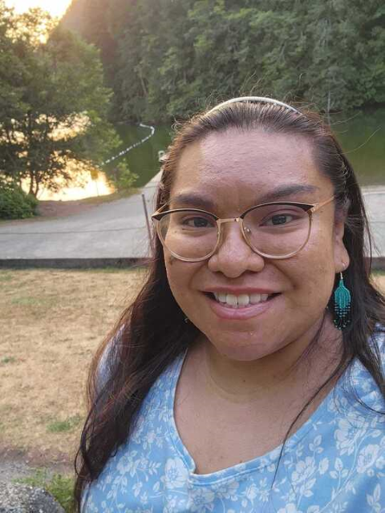
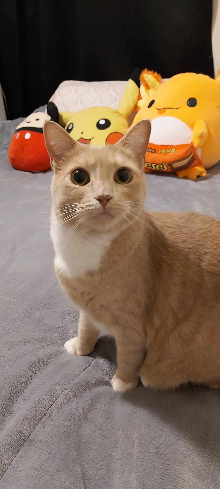

Hello world, I'm Danielle. I am learning about web development and this is my first websites. I live in Squamish, BC. I am a proud Squamish Nation member. I learned over the years that I am more of an introverted person. I like spending time with my family, pets and my boyfriend. My cat is named Binx she is an orange tabby. My boyfriend’s dog is named Tyr and he is a mix of white German shepherd and Malamute. I also like being apart of my indigenous Squamish community as much as I can. For example, doing cultural workshops like drum making, traditional medicine , or doing a group fitness class at Totem Hall. I have been working with youth on the autism spectrum since 2017, so 7 years now. I would like to transition careers into Tech. That is why I am here at FNCT and I took the fundaments program and now this foundations program. With these programs offered here at FNTC I want to be able to get an entry level job in the tech industry. I would love to be able to work from home or have a hybrid job where I go into the office some days and work from home other days. This is my personal website where I share some of my interests and hobbies. I hope you enjoy it.
This is a photo of me.
This is a photo of my cat. Her name is Binx and she is very cute and friendly.
This is an audio file of me introducing my website. I hope you like it too.
This is a video file of my cat binx when she was a kitten. I enjoy it and I hope you do too.
Here are some hyperlinks to external sources that I find useful or interesting. They will open in a new window.
These are some of my favorite foods and drinks. I like trying new cuisines and flavors.
Foods. List 1
Drinks. List 2